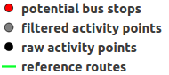

<!DOCTYPE html>
<html>
	<head>
		<title>Ally Map</title>
		<meta charset="utf-8" />
		<link rel="stylesheet" href="http://cdnjs.cloudflare.com/ajax/libs/leaflet/0.7.3/leaflet.css" />
		<link rel="stylesheet" type="text/css" href="css/own_style.css">
		<link rel="stylesheet" href="http://k4r573n.github.io/leaflet-control-osm-geocoder/Control.OSMGeocoder.css" />
		<script src="http://code.jquery.com/jquery-1.11.1.min.js"></script>
		<script src="http://cdnjs.cloudflare.com/ajax/libs/leaflet/0.7.3/leaflet.js"></script>
		<script src="js/leaflet-hash.js"></script>
		<script src="js/Autolinker.min.js"></script>
		<script src="http://k4r573n.github.io/leaflet-control-osm-geocoder/Control.OSMGeocoder.js"></script>
		<meta name="viewport" content="initial-scale=1.0, user-scalable=no" />
	</head>
	<body>
		<div id="map"></div>
		<script src="data/exp_potentialbusstops.js"></script>
		<script src="data/exp_filteredactivitypoints.js"></script>
		<script src="data/exp_rawactivitypoints.js"></script>
		<script src="data/exp_referenceroutes.js"></script>
		<script>
		var map = L.map('map', {
			zoomControl:true, maxZoom:19
		}).fitBounds([[-6.944033975,38.9747188758],[-6.651979625,39.4479459242]]);
		var hash = new L.Hash(map);
		var additional_attrib = 'created w. <a href="https://github.com/geolicious/qgis2leaf" target ="_blank">qgis2leaf</a> by <a href="http://www.geolicious.de" target ="_blank">Geolicious</a> & contributors<br>';
		var feature_group = new L.featureGroup([]);
		var raster_group = new L.LayerGroup([]);
		var basemap_0 = L.tileLayer('http://{s}.tile.thunderforest.com/transport/{z}/{x}/{y}.png', {
			attribution: additional_attrib + '&copy; <a href="http://www.opencyclemap.org">OpenCycleMap</a>, &copy; <a href="http://openstreetmap.org">OpenStreetMap</a> contributors,<a href="http://creativecommons.org/licenses/by-sa/2.0/">CC-BY-SA</a>'
		});
		basemap_0.addTo(map);
		var layerOrder=new Array();
		function pop_referenceroutes(feature, layer) {
			var popupContent = '<table><tr><th scope="row">route_id</th><td>' + Autolinker.link(String(feature.properties['route_id'])) + '</td></tr></table>';
			layer.bindPopup(popupContent);
		}

		function doStylereferenceroutes(feature) {
				return {
					weight: 3.3,
					color: '#01ff23',
					dashArray: '',
					opacity: 1.0,
					fillOpacity: 1.0
				};
		}
		var exp_referenceroutesJSON = new L.geoJson(exp_referenceroutes,{
			onEachFeature: pop_referenceroutes,
			style: doStylereferenceroutes
		});
		layerOrder[layerOrder.length] = exp_referenceroutesJSON;
		for (index = 0; index < layerOrder.length; index++) {
			feature_group.removeLayer(layerOrder[index]);feature_group.addLayer(layerOrder[index]);
		}
		//add comment sign to hide this layer on the map in the initial view.
		feature_group.addLayer(exp_referenceroutesJSON);
		function pop_rawactivitypoints(feature, layer) {
			var popupContent = '<table><tr><th scope="row">previous_dominating_activity</th><td>' + Autolinker.link(String(feature.properties['previous_dominating_activity'])) + '</td></tr><tr><th scope="row">bearing</th><td>' + Autolinker.link(String(feature.properties['bearing'])) + '</td></tr><tr><th scope="row">previous_dominating_activity_confidence</th><td>' + Autolinker.link(String(feature.properties['previous_dominating_activity_confidence'])) + '</td></tr><tr><th scope="row">current_dominating_activity</th><td>' + Autolinker.link(String(feature.properties['current_dominating_activity'])) + '</td></tr><tr><th scope="row">timestamp</th><td>' + Autolinker.link(String(feature.properties['timestamp'])) + '</td></tr><tr><th scope="row">created_at</th><td>' + Autolinker.link(String(feature.properties['created_at'])) + '</td></tr><tr><th scope="row">altitude</th><td>' + Autolinker.link(String(feature.properties['altitude'])) + '</td></tr><tr><th scope="row">feature</th><td>' + Autolinker.link(String(feature.properties['feature'])) + '</td></tr><tr><th scope="row">id</th><td>' + Autolinker.link(String(feature.properties['id'])) + '</td></tr><tr><th scope="row">speed</th><td>' + Autolinker.link(String(feature.properties['speed'])) + '</td></tr><tr><th scope="row">route</th><td>' + Autolinker.link(String(feature.properties['route'])) + '</td></tr><tr><th scope="row">current_dominating_activity_confidence</th><td>' + Autolinker.link(String(feature.properties['current_dominating_activity_confidence'])) + '</td></tr><tr><th scope="row">accuracy</th><td>' + Autolinker.link(String(feature.properties['accuracy'])) + '</td></tr></table>';
			layer.bindPopup(popupContent);
		}

		var exp_rawactivitypointsJSON = new L.geoJson(exp_rawactivitypoints,{
			onEachFeature: pop_rawactivitypoints,
			pointToLayer: function (feature, latlng) {
				return L.circleMarker(latlng, {
					radius: 6.0,
					fillColor: '#000000',
					color: '#000000',
					weight: 1,
					opacity: 1.0,
					fillOpacity: 1.0
				})
			}
		});
		//add comment sign to hide this layer on the map in the initial view.
		feature_group.addLayer(exp_rawactivitypointsJSON);
		function pop_filteredactivitypoints(feature, layer) {
			var popupContent = '<table><tr><th scope="row">previous_dominating_activity</th><td>' + Autolinker.link(String(feature.properties['previous_dominating_activity'])) + '</td></tr><tr><th scope="row">bearing</th><td>' + Autolinker.link(String(feature.properties['bearing'])) + '</td></tr><tr><th scope="row">route</th><td>' + Autolinker.link(String(feature.properties['route'])) + '</td></tr><tr><th scope="row">previous_dominating_activity_confidence</th><td>' + Autolinker.link(String(feature.properties['previous_dominating_activity_confidence'])) + '</td></tr><tr><th scope="row">current_dominating_activity</th><td>' + Autolinker.link(String(feature.properties['current_dominating_activity'])) + '</td></tr><tr><th scope="row">current_dominating_activity_confidence</th><td>' + Autolinker.link(String(feature.properties['current_dominating_activity_confidence'])) + '</td></tr><tr><th scope="row">timestamp</th><td>' + Autolinker.link(String(feature.properties['timestamp'])) + '</td></tr><tr><th scope="row">created_at</th><td>' + Autolinker.link(String(feature.properties['created_at'])) + '</td></tr><tr><th scope="row">feature</th><td>' + Autolinker.link(String(feature.properties['feature'])) + '</td></tr><tr><th scope="row">id</th><td>' + Autolinker.link(String(feature.properties['id'])) + '</td></tr><tr><th scope="row">speed</th><td>' + Autolinker.link(String(feature.properties['speed'])) + '</td></tr><tr><th scope="row">altitude</th><td>' + Autolinker.link(String(feature.properties['altitude'])) + '</td></tr><tr><th scope="row">accuracy</th><td>' + Autolinker.link(String(feature.properties['accuracy'])) + '</td></tr></table>';
			layer.bindPopup(popupContent);
		}

		var exp_filteredactivitypointsJSON = new L.geoJson(exp_filteredactivitypoints,{
			onEachFeature: pop_filteredactivitypoints,
			pointToLayer: function (feature, latlng) {
				return L.circleMarker(latlng, {
					radius: 6.4,
					fillColor: '#808080',
					color: '#000000',
					weight: 1,
					opacity: 1.0,
					fillOpacity: 1.0
				})
			}
		});
		//add comment sign to hide this layer on the map in the initial view.
		feature_group.addLayer(exp_filteredactivitypointsJSON);
		function pop_potentialbusstops(feature, layer) {
			var popupContent = '<table><tr><th scope="row">type</th><td>' + Autolinker.link(String(feature.properties['type'])) + '</td></tr></table>';
			layer.bindPopup(popupContent);
		}

		var exp_potentialbusstopsJSON = new L.geoJson(exp_potentialbusstops,{
			onEachFeature: pop_potentialbusstops,
			pointToLayer: function (feature, latlng) {
				return L.circleMarker(latlng, {
					radius: 6.0,
					fillColor: '#ff0000',
					color: '#000000',
					weight: 1,
					opacity: 1.0,
					fillOpacity: 1.0
				})
			}
		});
		//add comment sign to hide this layer on the map in the initial view.
		feature_group.addLayer(exp_potentialbusstopsJSON);

		feature_group.addTo(map);
		var title = new L.Control();
		title.onAdd = function (map) {
			this._div = L.DomUtil.create('div', 'info'); // create a div with a class "info"
			this.update();
			return this._div;
		};
		title.update = function () {
			this._div.innerHTML = '<h2>Potential Bus Stops in Dar Es Salaam</h2>Result with Scan Parameters 0.001 and 2 points min'
		};
		title.addTo(map);
		var osmGeocoder = new L.Control.OSMGeocoder({
            collapsed: false,
            position: 'topright',
            text: 'Find!',
		});
		osmGeocoder.addTo(map);
		var legend = L.control({position: 'bottomright'});
		legend.onAdd = function (map) {
			var div = L.DomUtil.create('div', 'info legend');
			div.innerHTML = "<h3>Legend</h3></img>";
    		return div;
		};
		legend.addTo(map);
	var baseMaps = {
		'Thunderforest Transport': basemap_0
	};
		L.control.layers(baseMaps,{"potential bus stops": exp_potentialbusstopsJSON,"filtered activity points": exp_filteredactivitypointsJSON,"raw activity points": exp_rawactivitypointsJSON,"reference routes": exp_referenceroutesJSON},{collapsed:false}).addTo(map);
		L.control.scale({options: {position: 'bottomleft',maxWidth: 100,metric: true,imperial: false,updateWhenIdle: false}}).addTo(map);
	</script>
</body>
</html>
